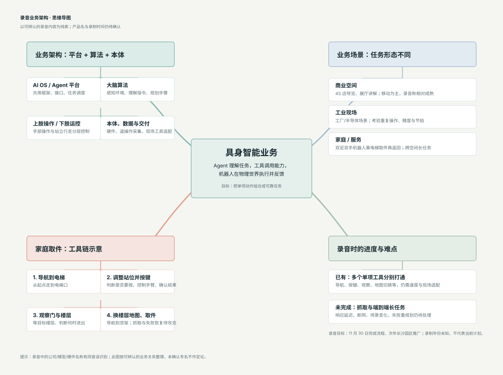

身体与传感器
关节、电机、手/夹爪、相机、深度传感器、计算单元和电池。硬件决定能碰什么、搬多重、运行多久。
这段录音像一次团队业务与技术架构介绍：讲到机器人怎么感知环境、怎么规划动作、怎么驱动身体，以及怎样把这些能力放进真实场景交付。把它当成一张“机器人公司如何把技术做成工作”的地图来听。
录音把业务拆成 AI OS / Agent 平台、算法、本体硬件、数据采集和场景交付，讲的是它们如何配合。
商业场景偏导览；工业场景主要考验操作；家庭场景拿取快递则串起导航、电梯交互、等待判断和抓取。
说话人称多数单项工具已连通，但取物能力与长流程端到端串联仍未完成，响应时间和现场稳定性是阻碍。
录音还对比了物理世界与数字世界：任务都可以拆成工具和步骤，但机器人还受动作速度、空间精度、断网、碰撞和失败恢复限制。请注意：录音日期未知，因此其中的“今年 11 月 30 日目标”和“明年园区推广”只是当时的计划，不能直接当作现在的进度。
导图根据新转写稿重画：中心是机器人任务，外圈展开公司技术分工、代表场景、家庭取件的任务链和录音里暴露的工程难题。专有名词仍需复听确认。
单独打开思维导图
录音采用“Agent 调工具”的思路描述一条长任务：模型做高层理解和规划，具体动作由已经封装好的导航、定位、按键、监控等工具执行，工具回报结果后再决定下一步。
关节、电机、手/夹爪、相机、深度传感器、计算单元和电池。硬件决定能碰什么、搬多重、运行多久。
识别人、物体、按钮、门和空间位置；判断机器人自身在哪里，环境是否发生变化。
把“拿起杯子”拆成靠近、对准、伸手、闭合、抬起等动作；控制器把动作变成各关节的速度/力矩命令。
接入电梯、门禁或产线；监控失败、远程协助、更新软件，并验证安全、成功率和维护成本。
先导航到电梯；走到按钮前调整站位；判断是否需要按键并执行；通过相机检查按钮、楼层和电梯门状态；到目标楼层后切换楼层地图；再导航到货架并抓取物品，最后带回。录音明确说，抓取工具和完整长流程当时还未打通。
| 工作层 | 做什么 | 录音中的对应线索 |
|---|---|---|
| AI OS / Agent 平台 | 提供通用 Agent 框架和接口；业务团队补充场景工具、技能和异常流程。 | 说话人称采用平台侧 AI OS，场景业务侧负责定义和开发具体工具。 |
| 算法与控制 | 大脑模型做感知/任务规划；上肢操作与下肢运动控制分层实现。 | 录音用“大脑/小脑”作比喻，谈到导航、VLA/世界模型、运控等。 |
| 硬件/本体 | 机器人身体、手部自由度、相机、计算设备等；有自研也有合作方本体。 | 提及本体与手部研发/合作。具体品牌有错听风险，不在此确认。 |
| 数据与验证 | 遥操作、数据采集、现场调试和仿真，用来训练与验证动作能力。 | 明确提到采数平台、Pico/遥操作等；部分设备名需核对。 |
| 场景交付 | 把可复用的平台能力改造成导览、产线操作或家庭任务。 | 交付团队负责具体工具、场景适配和长任务串联。 |
有身体、能感知和行动的智能系统。它不只在屏幕里回答问题，还要在物理世界里做事，并承受动作带来的后果。
把相机、深度传感器、力觉等信号变成“这里有桌子、按钮在右边、手里拿着物体”的环境信息。
回答“我在哪儿、要去哪儿、怎样安全到达”。导航到电梯口，不等于会按电梯或进入电梯。
用手或夹爪与物体交互，例如抓、放、开门、按按钮。它比沿固定路线行走更依赖精确感知和接触反馈。
运动控制把上层动作转成关节的实时指令，并在重心、摩擦、负载变化时维持稳定。
系统对环境状态以及“做某个动作会发生什么”的内部预测。它是研究方向之一，不等于已经拥有通用现实世界模拟器。
人通过手柄、动捕或示教设备操纵机器人，系统记录状态和动作，作为训练或调试数据。数据质量与场景覆盖很关键。
Vision-Language-Action：把视觉、语言指令和动作联系起来的一类模型。它可以帮助理解“把红杯放进箱子”，但仍需可靠的低层控制和安全机制。
在虚拟环境中测试动作或流程，成本通常低于反复上真机；但仿真与真实世界存在差异，实机验证仍不可省。
少见却真实的变化：物品换位置、光线变暗、地面打滑、按钮被挡住。演示成功不代表这些情况都能处理。
下面把录音说了什么、通用技术概念是什么分开写。录音日期和若干专有名词无法确认，因此“项目当前状态”不能只靠这段录音下结论。
录音能确认：说话人称某个“动态大模型”负责感知和任务规划；项目采用平台侧 Agent，提到云端/公司服务器部署，也讨论过本体侧小模型作为断网兜底。模型名称在自动识别稿里不可靠，无法确认具体厂商、型号、参数或现在是否仍在使用。
和其他 AI 的区别：聊天大模型主要生成文字；视觉模型常输出类别、位置或描述；推荐模型排序候选内容。机器人系统最终还要输出可执行动作，并通过传感器看动作结果、及时纠错，所以更看重实时性、空间定位、可靠性和安全。
怎么选：机器人通常不是靠一个大模型包办全部工作。高层可用多模态语言模型理解指令、识别场景并拆任务；VLA 可直接从视觉和语言生成动作；导航、机械臂轨迹和关节控制则常由专用算法负责。选择看延迟、稳定性、空间定位与动作能力、设备算力、离线运行、安全约束和成本。通用聊天模型擅长文字推理，不代表它能直接安全地控制电机。
这是工程分层的比喻，不是严格的生物学对应。大脑偏高层：听懂“去取快递”，看场景、安排步骤、根据结果决定下一步。小脑偏具体技能与身体控制：走路保持平衡、手臂伸到目标处、抓稳或按下按钮。现实系统还会有感知、规划器、运动控制器、安全监控等多个模块，不一定正好是两个模型。录音也按上肢操作和下肢运控分别介绍。
自由度（DoF）可以先理解为一个机构能独立改变的运动方向/关节数量。比如门铰链主要绕一个轴转，是 1 个自由度；机械臂每个可独立转动的关节通常贡献一个自由度。自由度更多，手臂姿态和绕障空间往往更灵活，但控制、标定和碰撞管理也更复杂。录音说某只手原来是 5 自由度，并据此解释按电梯按钮时手的可达范围受限；这不是整台机器人的自由度总数。
PICO 通常是 VR 头显品牌。录音在“遥操作采数平台”语境中提到 Pico，所以较可能指用头显/控制器进行示教或遥操作的设备；但仅凭自动转写不能确认具体型号、配置或实际操作方式。它本身不是机器人算法，也不等于机器人本体。要核实项目设备，应回听约 03:33–03:42（录音稿约 213–222 秒）或向项目人员确认。
把 Agent 想成“接到目标后安排并调用工具的调度员”。AI OS（录音中的拼写可能是 AI OS/iOS，不能据 ASR 定论）则是承载 Agent 的平台，提供模型接入、工具接口、会话/任务流程等基础能力，具体产品边界要看公司实现。机器人 Agent 可把“去拿快递”拆成导航、观察电梯、按键、等待、换地图、抓取等步骤，调用相应工具、读取结果、判断是否成功，并在异常时重试、改计划或求助。Agent 负责组织任务，不应替代底层实时控制和安全保护。
遥操作就是人远程操纵机器人，或通过头显、手柄、动捕等设备示教动作。系统可同步记录机器人看到什么、身体状态怎样、人下了什么动作，形成训练数据，也可用于调试和人工接管。录音把遥操作与采数平台联系起来。遥操不是机器人自主完成任务；数据还要筛选、标注，并验证能否让模型学会在不同现场复现。
录音描述的是一个混合流程：相机先检测图像中的目标点（像素位置）；深度传感器或深度估计模型给出距离；结合相机内参把像素反投影为相机坐标系中的三维点，再用标定结果变换到机器人坐标系。若要手臂碰到该点，还要做逆运动学，求一组关节角；再由路径规划器找避障路线，控制器执行并用传感器反馈修正。这里可能有模型（目标识别、深度估计），也有几何计算、优化和规划算法，不是“一个大模型直接看图就知道怎么走”。录音约 13:05–17:16（稿件约 785–1035 秒）讨论了按钮点位、深度、三维坐标和逆解。
这段录音不能证明项目已经用了世界模型。说话人在介绍上肢技能时把“VLA、世界模型”等作为相关方向/技术词提到，但没有明确说家庭取件项目已部署哪一种世界模型。录音具体讲到的按钮和导航方法，至少包括视觉/深度信息、相机参数、坐标变换、逆运动学以及工具流程；这些本身不等于世界模型。若要确认，需问项目是否维护可预测环境变化的状态模型、模型具体输入输出、在哪个环节上线，以及是否有评测结果。
VLM（Vision-Language Model）把图像/视频与语言关联起来，可回答“图里有什么”“按钮在哪”等问题；它不一定会输出可执行动作。VLA（Vision-Language-Action）把视觉、语言指令和动作连接起来，目标是从“看见 + 听懂”走向动作输出；通常仍要搭配低层控制、安全检查和反馈。WA不是具身智能里含义唯一、统一的常用缩写。录音自动稿对应位置识别成“VLA、WR、世界模型”，可能把英文缩写听错了；不宜擅自断定 WA 的全称。最好回听约 01:58–02:13（稿件约 118–132 秒）或核对说话人课件。若原词实际是 WM，一般指 World Model（世界模型）。
大多数常见情况是“主干”，少见但真实的变化就是“长尾”：按钮被遮住、物品换了包装或位置、电梯临时停运、光线变化、网络中断、抓取滑落。每种情况单看都少见，组合起来却很多。机器人不能只在固定演示里成功，还要识别自己不确定或失败、停稳并重试/改计划/叫人；这也是录音反复提到长任务兜底和现场稳定性的原因。
大模型/Agent 决定“做什么、调用哪个技能”；视觉与几何模块定位目标；规划和控制把目标变成可执行动作；传感器检查结果，失败时再调整或求助。项目是否真的采用某个具体模型，要看部署记录和现场验证，不能只根据技术名词推断。
下面是录音能较清楚还原的业务地图。组织名、模型名和合作方专名仍有误听可能，按职能理解比按专名记忆更可靠。
| 板块 | 职责 | 小白可以这样理解 |
|---|---|---|
| AI OS / Agent 平台 | 提供共用系统骨架、接口和 Agent 执行能力。 | 像机器人的“工作台和调度员”；业务团队在上面定义场景技能和工具。 |
| 大脑算法 | 从视觉和指令中识别任务、理解环境并规划下一步。 | 负责判断“要做什么、先做哪一步”。 |
| 小脑与运动控制 | 上肢负责操作， 下肢负责站立和移动，并及时控制关节。 | 负责“怎么把动作做出来”；精确按键和抓物不能只靠语言模型。 |
| 本体硬件 | 机器人身体、手部、相机、计算单元及接口；录音提到自研与合作本体并存。 | 身体的自由度、手的结构、传感器位置决定动作能力上限。 |
| 数据与交付 | 用遥操作采集数据，接入现场地图和流程，逐步调试工具并处理异常。 | 把“实验室会做”变成“客户现场重复做得成”。 |
| 场景 | 录音中的任务 | 关键问题 |
|---|---|---|
| 商业空间 | 4S 店导览、展厅讲解和导航。 | 以移动和讲解为主，身体操作相对少；说话人称该类场景较成熟。 |
| 工业现场 | 工厂及半导体相关合作场景。 | 流程常较固定，操作精度、节拍和稳定性是关键。 |
| 家庭 / 服务 | 双足双手机器人坐电梯到一楼取快递再返回。 | 任务跨空间、跨楼层，环境和物品不固定，还涉及电梯、联网、身份信息和抓取失败恢复。 |
任务规划约 1–2 Hz；上肢操作约 10–20 Hz；运控约 50–100 Hz；底层电机可到约 200 Hz。越靠近身体动作，通常越需要低延迟、高频率的专用控制。
成熟度怎么判断：分别问“单项工具是否能用”“整条任务是否端到端完成”“失败后能不能恢复”“换一个电梯/货架/物品还能不能做”。录音里的回答并不等同于商业化验收数据。
这段是内部业务介绍，不是 2026 年行业公告。录音日期没有提供，下面保留原说法的相对时间，不把它们当作当前状态。
| 环节 | 录音自述 |
|---|---|
| 单项工具 | 导航、靠近面板、按钮流程、等待观察、楼层地图切换等工具大多已分别打通；个别工具还需要速度和适配优化。 |
| 取物能力 | 取快递/抓取工具当时还没完成，是端到端任务的缺口之一。 |
| 长任务串联 | 各步骤单独能运行，不代表整条任务已完成。电梯门可能约 3 秒就关，若感知、工具或 Agent 响应过慢，机器人会错过动作窗口。 |
| 异常与联网 | 调试电梯里加了 AP（无线接入点，提供/延伸 Wi‑Fi 覆盖），但机器人在不同网络间切换不够顺；AP 不等于电梯自带互联网。后续要考虑现场无网、动作失败后的重规划，以及云端模型不可用时本体侧如何兜底。 |
| 当时目标 | 说话人提到“11 月 30 日”希望完成流程，并谈到“明年”在长沙园区推广的可能性。年份和目标是否后来实现，无法从这段录音确认。 |
一句话理解当时阶段：已经从零散动作走向工具化和小场景测试，正在攻克可靠的长流程串联；它不是录音所能证明的“已规模部署”。
具身智能的进展可以分成四级：能在受控环境演示；能在限定任务中稳定运行；能在不同地点复制部署；能以合理成本大批量运营。新闻里的“发布”“合作”“试点”“量产计划”分别处在不同阶段，不宜合并成“已经普及”。
多模态大模型、视觉语言动作模型和机器人数据训练成为显著研究方向。行业开始更积极地把语言指令、视觉理解和动作策略连接起来。研究论文或视频演示不能单独证明现场可靠性。
国务院新闻办公室英文网在 2025 年 5 月报道人形机器人进入中国工厂场景的进展，并指出汽车制造因数字化、标准化程度较高而成为早期应用场景之一。这是行业报道与案例线索，不代表全行业已经规模运营。
公司公告称，产品版 Atlas 开始制造，2026 年部署已全部安排，计划向 Hyundai 的 Robotics Metaplant Application Center（RMAC）和 Google DeepMind 发货；新增客户计划在 2027 年初加入。它显示从研发演示向指定机构部署推进，但公告中的“安排/计划”不能直接当成独立验证过的长期产线产能。
新华社报道，AGIBOT（智元机器人）宣布第 10,000 台量产人形机器人下线，并称从 5,000 台到 10,000 台用时略多于三个月。这是制造端规模的信号；“下线”不等于同等数量已交付、被客户持续使用或产生对应收入，报道本身也没有给出这些运营指标。
这些报道反映的是不同证据层级：企业公布的部署安排、媒体报道的制造数量、行业报道的应用趋势。它们都值得关注，但不能互相替代。要判断商业化程度，还需要客户侧确认、现场任务范围、运行时长、人工介入率、稳定性和营收数据。
建议看新闻时记录：公告日期、出资/签约双方、是展示/试点/采购/交付哪一种、部署地点和数量、是否有人监督、持续运行多久、任务成功率是否由第三方给出。
以下文本是豆包 AUC 对原音分段后的自动识别稿，带说话人标记和相对音频时间戳，不代表经过人工逐字校对。为了避免伪造“原文”，完整识别稿单独提供：
下载完整带时间戳识别稿识别稿共 415 段，按音频时间顺序排列。建议先用摘要了解主线，再按时间戳回听需要核实的句子。附件名写作“巨声”，转写中出现“聚生/巨声/具深”等近音，无法仅凭 ASR 确认公司名；人名、产品名、数字和部分技术词也应回到原音复听。